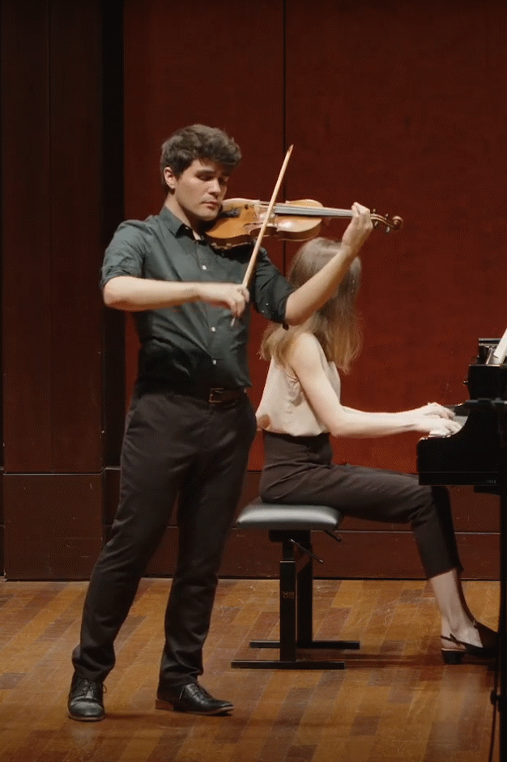

Jason Colón is a Violin and Piano teacher from Dallas, Texas. After studying Music Performance in Violin at the University of North Texas as an Undergraduate and at the University of Cincinnati College-Conservatory of Music as a Graduate Assistant, he now teaches in Chicago. As a classically trained musician of over 19 years, Jason provides a flexible, yet comprehensive approach to teaching.
With performances in a number of orchestras and chamber ensembles all over the country, Jason has performed with accomplished artists such as Jaroslav Kyzlink, Anastasia Markina, and Vinay Parameswaran. Key moments include performances at the prestigious Carnegie Hall, in the Boston Early Music Festival, placing 3rd in the George Papich Chamber Music Competition, and as season concertmaster at the UC College Conservatory of Music. With years of experience teaching privately as well as in both public and community music schools, Jason aims to inspire a generation of musicians, and help them find their place in the musical world.
